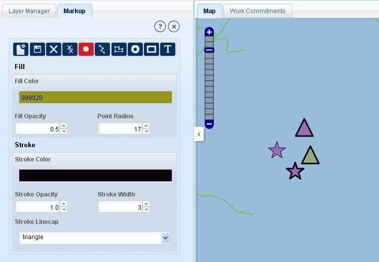
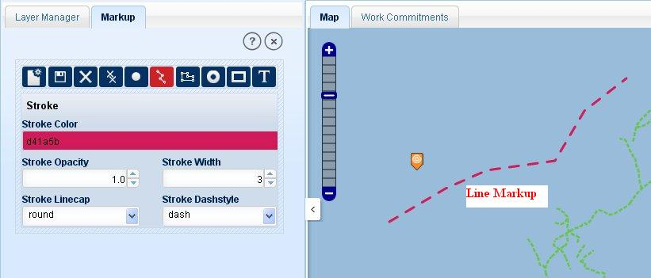
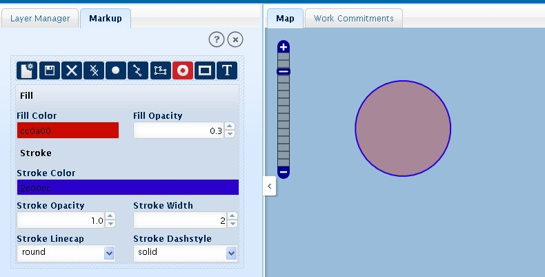
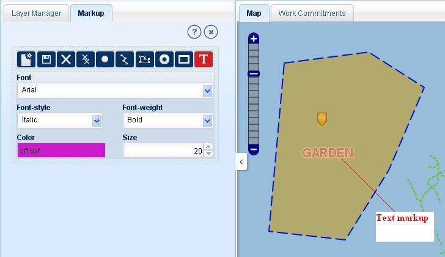

Markup functionality allows users to create point, line, polygon, circle and text label for reference and illustration purpose. User can customize features and labels and save them for future retrieval. All the mark-ups created by user are saved in cosmetic layer. As user click on this tool, ‘Markup’ tab is opened on the left panel. This tab consists of multiple tools to manage mark-ups. These markup tools are listed below:
New: It clears (removes) all the previously saved mark-ups in a projects.
Save: It saves all the created mark-ups and labels.
Delete: It allows users to delete mark-up feature by clicking on that mark-up (before saving).
Delete All: It allows users to delete all the mark-ups and labels before saving them.
Point: It used to draw point mark-up.
Line: Used to draw line mark-ups.
Polygon: Used to draw polygon mark-ups.
Circle: Used to draw circles as mark-ups.
Rectangle: Allows users to draw rectangle mark-ups.
Label /Text: Allows users to create text mark-ups or labels.
Point mark-up is by default active tool in mark-up tab.
To create a point mark-up, click on ‘Point’ tool.
A form will be displayed to enter the details the point lookup. The form has two parts ‘Fill’ and ‘Stroke’.
Fill part has fields to enter the fill properties of point. And stroke part has fields to enter the outline details of point.
In fill part select fill colour in ‘Fill Colour’ colour box.
Specify the opacity of fill in ‘Fill Opacity’ spin box.
Specify the radius of point in ‘Point Radius’ spin box.
In stroke part, select stroke colour, specify stroke opacity, stroke width (outline width).
Select ‘Stroke Linecap’ (point shape) form drop down list.
Now click on map at required location, a point will be drawn at the clicked location.
Click on ‘Save’ tool to save that point.

Fig.1 Point Creation
To make custom lines (markups) click on Line

tool. Application will show a form to fill the line details.
Select ‘Stroke Colour’ (Line colour) by clicking on colour box.
Select a colour with the colour picker.
Select line opacity by using ‘Stroke Opacity’ Spin box (opacity limit 0 to 1).
Select line width by using ‘Stroke Width’ spin box.
Select line-cap style using ‘Stroke Linecap’ drop-down list box.
Select line style from the ‘Stroke Dashstyle’ drop-down list box.
Now draw the line on required location.
Double click to finish the line and click on ‘Save’ tool to save that line.

Fig.2 Making Line mark-ups
For polygon mark-ups, click on polygon, application shows a form to customize polygon.
Select the colour for polygon fill.
Click on the ‘Fill Colour’ box, a colour- picker will be shown to user.
Select the required colour.
Set the opacity for polygon fill by using ‘Fill Opacity’ spin box.
Now for stroke part, select outline colour with ‘Stroke Colour’.
Set outline opacity using ‘Stroke Opacity’ spin box.
Enter outline width in ‘Stroke Width’ spin box.
Select outline cap style from the ‘Stroke Linecap’ drop-down list box.
Select outline style from the ‘Stroke Dashstyle’ list box.
Click on the map at required location, create polygon and double click to finish the polygon.
Click on ‘Save’ tool to save the markups.
To create a circle markup click on circle tool. A form as polygon markup will be shown in ‘Markup’ tab.
Select ‘Fill Colour’ by clicking on the colour box. A colour picker will be shown.
Set the opacity of circle fill in ‘Fill Opacity’ spin box.
Select outline colour for circle in ‘Stroke Colour’ box.
Set the outline opacity in ‘Stroke Opacity’ spin box.
Specify outline width in ‘Stroke Width’ spin box.
Select outline cap style from the ‘Stroke Linecap’ List box.
Select outline style for circle from the ‘Stroke Dashstyle’. .
Click on the required location and without releasing the mouse button drag it to the circumference of circle and release the mouse button.
Click on ‘Save’ tool to save the markups.

Fig.3 Circle markup creation
Creation of rectangle is similar to polygon creation.
Click on Rectangle icon.
Select ‘Fill Colour’ by clicking on the box and then selecting the required colour from the colour picker as shown.
Specify the ‘Fill Opacity’ using the spin box.
Select outline colour in ‘Stroke Colour’ box.
Set outline opacity in ‘Stroke Opacity’ spin box.
Set outline width in ‘Stroke Width’ spin box.
Select outline cap style from the ‘Stroke Linecap’ list box.
Select outline style from the ‘Stroke Dashstyle’ drop-down list box.
After filling all the details, click on the required location on map canvas and without releasing the mouse button, drag it to the other end of rectangle and release the mouse button.
Then click on ‘Save’ tool to save these markups.
To label on mark-ups or any feature or just to create a text mark-up:
Click on ‘Text’ tool. Application shows the text details.
Select a font type from the ‘Font’ list box.
Select the style from the ’Font Style’ list box as ‘Normal’ or ‘Italic’.
Select ‘Font Width’ as ‘Normal’ or ‘Bold’ form the list.
Select colour for the text by clicking on ‘Colour’ box. A colour picker will be shown.
Select required colour from the colour picker and click on ‘Close’ button on the colour picker.
Specify the size for the text in ‘Size’ spin box.
Now click on the map canvas at required location. Application shows a text box at clicked location.
Enter the text in it and press enter. The text will be shown in the specified details.
Click on ‘Save’ button to save text mark-up.
User can exit from the ongoing mark-up creation by pressing ‘Escape’.

Fig.4 Text Markup
Mark-up is saved only if user will click on ‘Save’ tool. Users can create multiple and different type of mark-ups and save them together.
To delete a specific markup before saving, click on the ‘Delete’ tool and then click on that markup. Application will delete that markup.
To delete all the created markups before saving them, click on the ‘Delete All’ tool. Application will delete all the markups; those are made recently and not saved.
Click on ‘New’ tool to delete all the markups from the map canvas. This functionality allows users to delete all type of marks either saved or not.